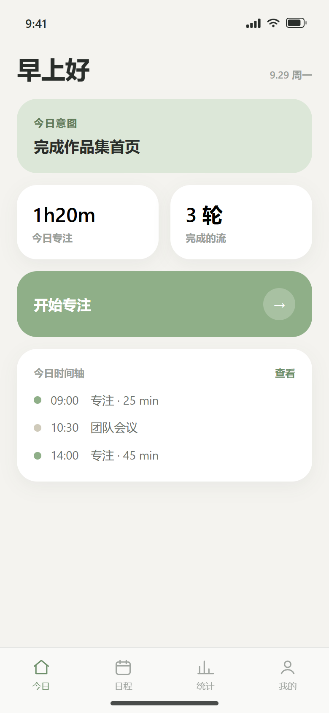
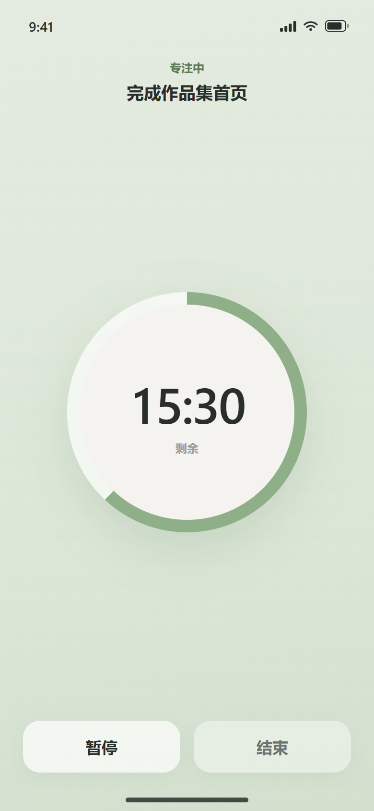
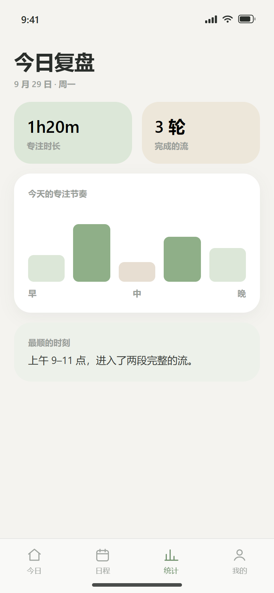
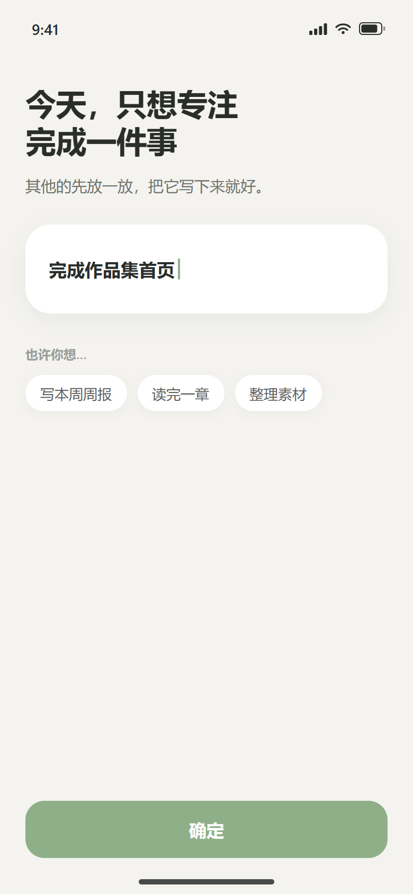
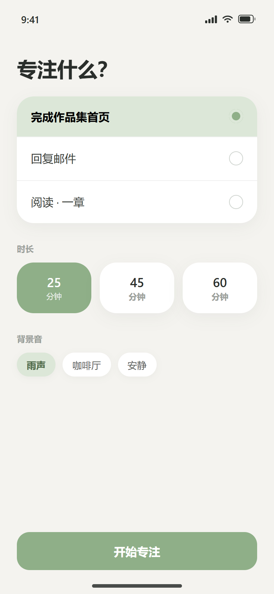
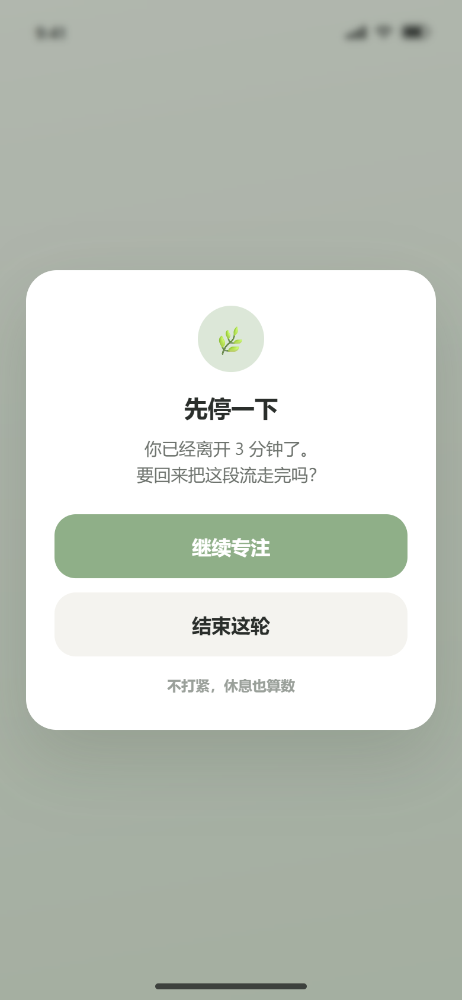
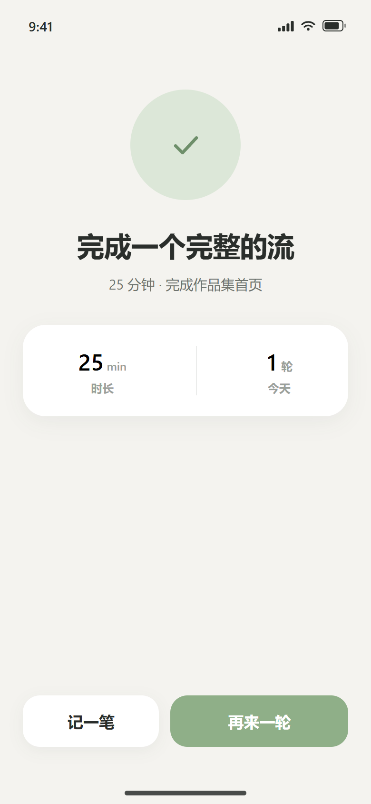
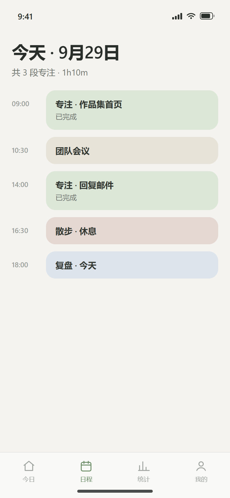
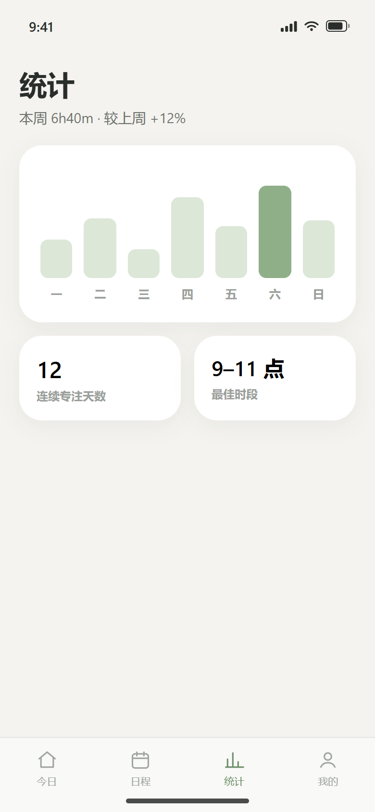
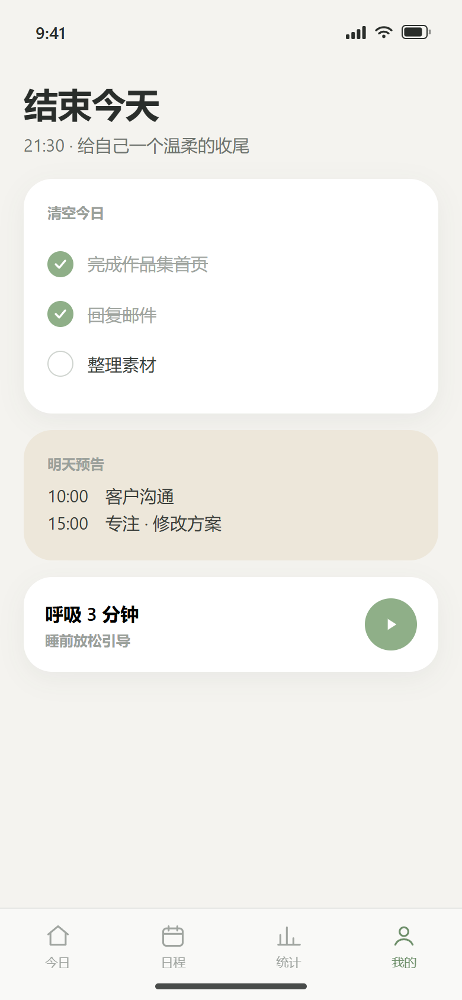

专注 · 日程 App —— 低饱和自然色、大量留白、Bento 模块化网格



同一套功能，换成「Calm 极简 + Bento 网格」的表达：鼠尾草绿 / 暖沙 / 雾蓝的低饱和自然色，大留白、柔和阴影，首页以 Bento 模块化卡片组织信息。







用模块化卡片承载信息，每张卡只讲一件事；配色取自自然，压低饱和度，营造「安静但不寡淡」的气质。
首页用 2 列 Bento 网格：今日意图（跨 2 列）、专注时长、完成轮数、开始专注、时间轴——每张卡独立自洽，可自由组合。
#8FAF88 · 主色，用于专注、确认
#E7E1D4 · 用于次级信息块
#DDE4EC · 用于复盘与日程
背景 #F4F3EF，卡片纯白，柔和阴影极轻
功能与前两版完全一致，只是用更安静的方式呈现。
用 Bento 卡片承载今日意图、开始专注、专注时长、完成轮数与时间轴预览。
编辑意图开始专注查看时间轴输入或选择建议标签，确定后显示在首页意图卡。
输入快速选择确定任务列表单选、时长分段（25/45/60）、背景音。
任务单选时长背景音柔和鼠尾草绿渐变背景，细圆环倒计时，避免任何刺激。
圆环进度暂停结束长时间无操作时弹出，措辞温柔，可继续或结束本轮。
离开检测继续专注结束这轮柔和的完成环与简短鼓励，可再来一轮或记一笔。
时长统计再来一轮记一笔轻柔配色的时间轴串联专注、会议、休息与复盘。
时间轴类型色状态Bento 卡片展示专注时长、完成轮数、节奏图与最顺时刻。
关键数字节奏图保存柔和的周柱状图、连续天数、最佳时段。
周趋势连续天数最佳时段清空今日待办、预览明天、呼吸 3 分钟。
待办清空明日预告呼吸引导从设定意图到睡前清空，形成闭环。
同一支 demo 的浓缩版：品牌 → 首页 → 专注 → 完成 → 复盘 → 睡前 → 品牌收尾。适合作品集首页自动播放、或社媒投放。
7 个镜头快速串起完整使用流，保留手型光标、点击音效与轻音乐；默认静音自动播放，方便放在首屏。
文件：showcase/flow-demo-15s.mp4 · 唯一保留的动态演示